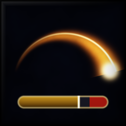

SwingCast
Adds spell icon, cast time, latency zone and a swing timer to the standard cast bar. The strip lights up while Maul, Heroic Strike or Cleave is queued.
See it in action
A recreation in your browser, close to what you see in game.
What it does
Settings
- ◆Switch on Forever's swing timer first: Options > Advanced Options > Swing Timer.
- ◆Its own settings window: drag it anywhere, it stays open while you play and every change shows live.
/swc, or the minimap button: left-click the window, right-click an 8 s preview. - ◆Move the swing strip in the game's Edit Mode or with "Move strip" in the window, or keep it under the cast bar.
- ◆Show or hide icon, cast time, latency zone, swing strip and its seconds; hide the built-in swing bars.
- ◆Advanced:
/swc helplists every setting as a command.
Changelog
- Spell icon inside the cast bar, at its left end and as high as the bar (new default), so it needs no room next to the bar. "Icon inside the bar" off puts it left of the bar as before.
- With the icon left of the bar, Edit Mode's box around the cast bar includes the icon's room, and Edit Mode shows a placeholder icon, so you see where it lands while placing the bar.
- Own options window instead of a page in the game's options: drag it anywhere, it stays open while you play and every change shows live.
/swc, the minimap button or the addon menu open it; the game's options only point to it. While it is open the swing strip shows a preview. - Move the swing strip: in the game's Edit Mode it shows up as a blue frame you can drag, like the game's own frames. Or "Move strip" in the window (
/swc unlock), right-click to lock. Width for the free position, "Default position" puts it back under the cast bar. - Fix: when another addon hides or replaces the standard cast bar, the swing strip no longer ends up in the top left corner. It switches to its own position and tells you once in chat.
- New commands:
/swc unlock,/swc lock,/swc width <60-600>,/swc attach,/swc position reset./swc helplists all.
- Brighter icon that stays readable on the round minimap button.
- New icon: a blazing weapon swing above a cast bar, for the minimap button and the addon list.
- With the swing strip switched off, SwingCast no longer does any work each frame.
8 older versions
- The cast time label is only redrawn when the shown value changes, not every frame.
- Code check with LuaLS and the WoW API annotations runs with every change; removed fallbacks for old clients.
- First stable release. No functional changes since 0.3.2.
- README and project description now lead with the options window; chat commands moved to an advanced section.
- Own minimap and addon list icon.
- Now also released on Wago.
- Font: choose the font of the cast time and the swing seconds (the fonts every client has) and its size, in the options window or with
/swc font <7-20>. - Colours: swing strip, queued swing, Cleave and latency zone each get a "Choose" button in the options window that opens the game's colour picker, plus a reset button. Also
/swc color swing|queued|cleave|latency|reset.
- Minimap button: left-click opens the options, right-click shows the swing strip preview.
/swc minimaphides or shows it. - Entry in the game's addon menu next to the minimap, with the same clicks.
- Options window under Options > AddOns > SwingCast with every setting, including the strip height.
/swc optionsopens the options window.- Fixed:
/swc swingTextand/swc hideNativedid nothing because the command is read in lower case.
- Swing strip copies the built-in timer's values and seconds label as they are. Forever hands the attack speed to addons as a secret value that cannot be calculated with.
- If the strip fails, it switches itself off and the built-in swing timer is shown again.
- Spell icon, remaining cast time and latency zone on the standard player cast bar.
- Swing strip under the cast bar, mirrored from Forever's built-in swing timer (main hand, off hand and ranged where present).
- Strip turns orange while Maul, Heroic Strike or Raptor Strike is queued, blue for Cleave.
/swcsettings,/swc testpreview.- Released on CurseForge (project 1800255).
More from Bencepo
ProcFlare
StatTrim
LevelTrail
Feedback, bugs and ideas
Every addon is tested in game before it ships, but Forever changes often. Tell me what breaks and what you miss.
Report a bug
Open an issue on GitHub (the form asks for everything needed) or leave a comment on CurseForge: what you did, what happened, and the error text from BugSack if there is one.
Share your run
LevelTrail turns your export into a share image for Discord or Reddit, VendorFloor does the same for your flips. Names can be hidden.
Suggest a feature
Ideas that make leveling faster or the UI calmer have the best chance. Comments on CurseForge reach me directly.
Support the addons
All addons and pages are free and stay free, without ads or cookies. A privacy-friendly counter only tallies page views. If they save you time in game, a tip keeps new features and fixes coming.